nmr_sims.spin_system¶
This module provides the SpinSystem class, allowing specification
of a specific spin system according to the nuclear idenitites, isotropic chemical
shifts, and J-couplings of each spin, along with the temperature and magnetic
field they are subjected to.
The SpinSystem class is used by all experiment simulation functions to derive
the equilibrium operator and Hamiltonians required.
- class nmr_sims.spin_system.SpinSystem(spins, default_nucleus='1H', field='500MHz', temperature='298K')[source]¶
Object representing a particular spin system.
This represents an ensemble of many identical spin systems subject to a specified temperature and magnetic field strength.
Create an instance
SpinSystem.- Parameters
spins (
Dict[int,Dict]) –A dictionary with information on each spin that makes up the system. Below is an example of a valid format. This specifies a three proton (AMX) system, with the following parameters:
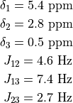
spins = { 1: { "shift": 5.4, "couplings": { 2: 4.6, 3: 7.4, }, }, 2: { "shift": 2.8, "couplings": { 3: 2.7, }, }, 3: { "shift": 0.5, }, }
Note that there is no need to repeat coupling information. As the coupling between spins 1 and 2 has been specified within the entry for spin 1, there is no need to repeat this for spin 2. Similary, spin 3 has been given no explicit coupling information as this has already been provided in the specification of spins 1 and 2.
Each entry in the
spinsdictionary should have anintas a key and adictas its value. Within the eachdict, the following key-value pairs are permitted:"shift"(necessary) - The isotropic chemical shift of the spin in ppm."couplings"(optional) - The scalar couplings between the spin and its coupling partners. This should be denoted by adictwith anintkey specifying the coupling partner, and afloatvalue, specifying the J-coupling in Hz."nucleus"(optional) - The identity of nucelus giving rise to the spin. If not specified, thendefault_nucleuswill be used. Can be either an instance ofnmr_sims.nuclei.Nucleusof a string corresponding to one of the pre-defined nuclei.
default_nucleus (
Union[Nucleus,str]) – The nucleus identity of any spin in thespinsdictionary that is not given an explicit"nucleus"key. By default, all unspecified nuclei will correspond to proton (¹H).field (
Union[int,float,str]) –The magnetic field strength. The following inputs are valid:
A positive number (
intorfloat). The field will be taken to be in Telsa.A
strsatisfying the regexr"\d+T". Again, the field will be taken to be in TeslaA
strsatisfying the regexr"\d+MHz". This corresponds to the field which induces the specified Larmor frequency for proton.
By default, this is set as
"500MHz", correponding to approximately 11.74T.temperature (
Union[int,float,str]) –The temperature. The following inputs are valid:
A positive number (
intorfloat). The field will be taken to be in Kelvin.A
strsatisfying the regexr"\d+K". Again, the field will be taken to be in Kelvin.A
strsatisfying the regexr"-?\d+C". The temperature will be taken to be in Celcius.
Warning
Current bug
Negative Celcius specifications (
"-\d+C") are not supported currently, and will raise an error if given. PLease manually convert to Kelvin.- Ix(nucleus=None)[source]¶
Return the 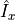 operator correpsonding to the system, with the option of specifying the nucelus to target.
For a given nucleus
 , this is given by:
, this is given by: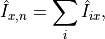
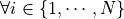 satisfying the requirement that spin
 corresponds to nucelus .
corresponds to nucelus .- Parameters
nucleus (
Optional[str]) – The identity of the nucelus to target. IfNone, no constraint will be put on the nucleus.- Return type
Operator
- Iy(nucleus=None)[source]¶
Return the 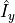 operator correpsonding to the system, with the option of specifying the nucelus to target.
For a given nucleus
, this is given by: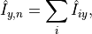
satisfying the requirement that spin
corresponds to nucelus .- Parameters
nucleus (
Optional[str]) – The identity of the nucelus to target. IfNone, no constraint will be put on the nucleus.- Return type
Operator
- Iz(nucleus=None)[source]¶
Return the 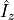 operator correpsonding to the system, with the option of specifying the nucelus to target.
For a given nucleus
, this is given by: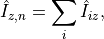
satisfying the requirement that spin
corresponds to nucelus .- Parameters
nucleus (
Optional[str]) – The identity of the nucelus to target. IfNone, no constraint will be put on the nucleus.- Return type
Operator
- property basic_frequencies: numpy.ndarray¶
Return the baisc (laboratory frame) frequencies of each spin.
Given by 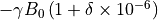
- Return type
ndarray
- property boltzmann_factor: Iterable[float]¶
Return the Boltzmann factor for each spin in the spin system.
This factor is given by 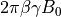. See
inverse_temperature()for the definition of .
.- Return type
Iterable[float]
- property equilibrium_operator: nmr_sims._operators.Operator¶
Return the equilibrium operator of the spin system.
Given by:
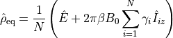
Where 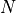 is the number of spins, and 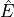 is the identity operator.
- Return type
Operator
- hamiltonian(offsets=None, decouple=None)[source]¶
Return the Hamiltonian for the spin system.
Given by:
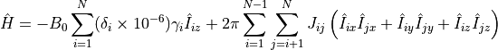
- Parameters
offsets (
Optional[dict]) – Specification of transmitter offsets for given nuclei, in units of Hz. As an example, the argument{"1H": 5000}would inorporate a transmtter offset of 5000Hz for proton.- Return type
Operator
- property inverse_temperature: float¶
Return the inverse temperature for the system.
Given by 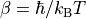.
- Return type
float
- classmethod new_random(nspins=3, ncouplings=None, max_couplings=3, shifts_range=(0.0, 10.0), couplings_range=(3.0, 15.0), field='500MHz', temperature='298K')[source]¶
Create a new instance with random chemical shifts and offsets.
Note
Only homonucler ¹H spin systems are available currently.
- Parameters
nspins (
Union[int,Tuple[int,int]]) – The number of spins the system should comprise.ncouplings (
Optional[int]) – The total number of couplings featured in the spin system. This must be a value satisfyingncouplings <= int(0.5 * (nspins * (nspins - 1)))There is a possibility that the final spin system will have fewer couplings than those stated if the random network of couplings does not satisfy the constraint placed bymax_couplings.max_couplings (
Optional[int]) – The largest possible number of coupling interactions any particular spin may have.shifts_range (
Tuple[float,float]) – The smallest and greatest values of chemical shift any particular spin may have.couplings_range (
Tuple[float,float]) – The smallest and greatest values of scalar coupling any particular interaction may have.field (
Union[int,float,str]) – See__init__()temperature (
Union[int,float,str]) – See__init__()
- Return type
- pulse(nucleus, phase=0.0, angle=1.5707963267948966)[source]¶
Return the operator for a pulse targeting a specific nucleus, with specified phase and flip angle.
- Parameters
nucleus (
str) – The identity of the nucleus to be targeted. Should match thenucleus.name.phase (
float) – Desired phase of the pulse in radians.Angle – Desired flip angle in radians.
- Return type
Operator
- property rotframe_frequencies: numpy.ndarray¶
Return the rotating frame frequencies for each spin.
Given by 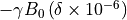
- Return type
ndarray